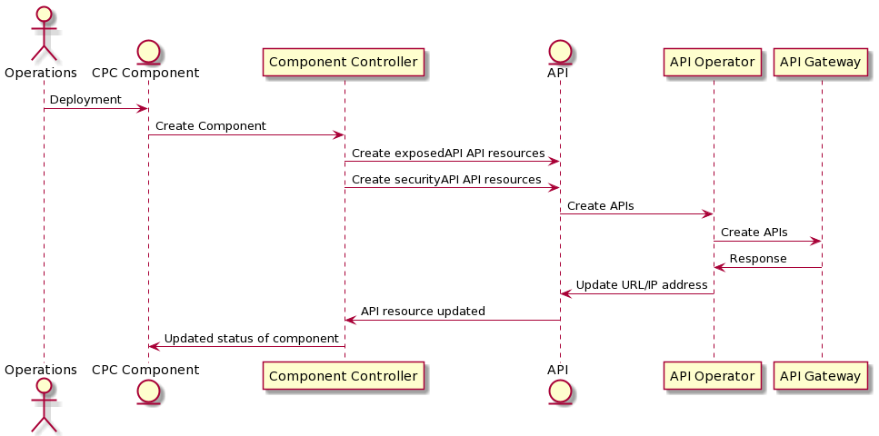

API Operator apig - Introduction
The API operator ‘apig’ takes the meta-data described in the api.oda.tmforum.org CRD and uses it to configure the API Gateway(apig in short) from WhaleCloud.
The component controller written in Python, using the KOPF (https://kopf.readthedocs.io/) framework to listen for API resources being deployed in the ODA Canvas.
Flow description
When deployment Consolidated Product Catalog (CPC) Component, component controller gets the exposed API definition from Helm chart, and create corresponding API CRDs. The Helm chart is the Component Envelope describes the overall Component structure as a Component custom resource,including the TMF620 for core function and TMF669 for security and management.
When API CRDs created, API operator configures API custom resources in API Gateway automatically. API operator is another K8S controller which watches the API objects and reacting to the objects’ events (such as the install update and delete).
When API registed in API Gateway successfual, it will feeback to Component, and also update status of API resources.

Testing KOPF module
Run: kopf run --namespace=components --standalone .\apiOperatorApig.py